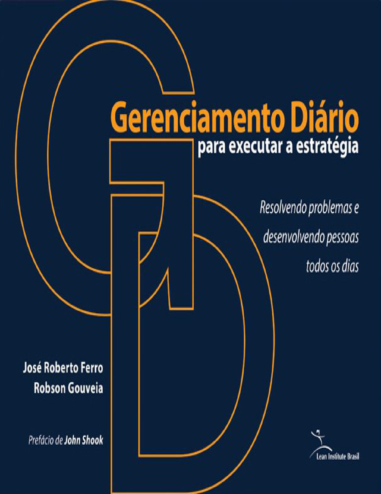
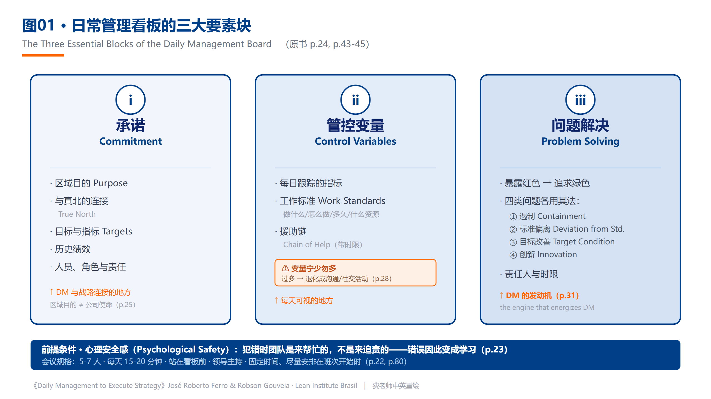
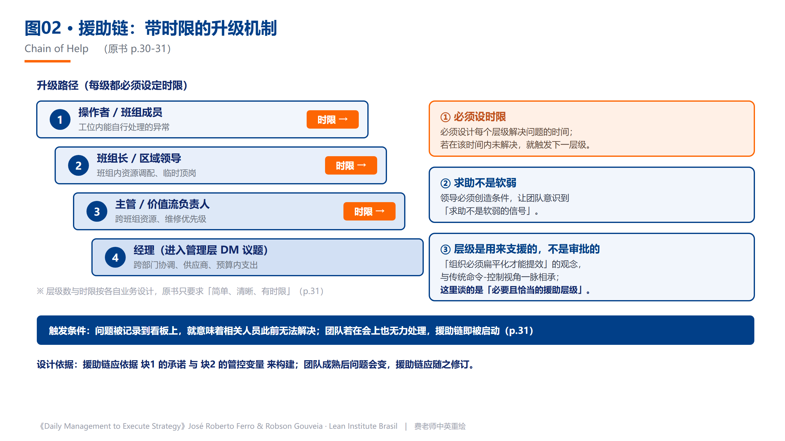

费老师拆书系列 · 第 4 本《日常管理：执行战略》。把一本书读厚，再拆薄。 这一本是葡萄牙语写的，出自巴西精益研究院，John Shook 作序。
为什么翻开它
先问个扎心的问题：你们公司今年的战略，车间里的班组长知道吗？
费老师去企业，最常见的场面是这样的——年初老板花几十万请咨询公司做战略规划，PPT 做得极漂亮，挂在会议室墙上。到了年底复盘，发现执行得七零八落。追问下去，一线的回答往往是：“那个啊，我们不太清楚，我们就是干活的。”
战略和现场之间，隔着一条河。
这本书上来就把这条河命名了：
“战略之所以失败，是因为它们被’部分地展开’、又被’随机地跟进’。”
你品品这两个词——部分展开、随机跟进。是不是精准得让人不舒服？
这本书叫《Daily Management to Execute Strategy》，直译过来是《日常管理：执行战略》，副标题更朴素——“每天解决问题、培养人”。作者是 José Roberto Ferro（若泽·罗伯托·费罗，巴西精益研究院创始人）和 Robson Gouveia，序是 John Shook 写的。

老规矩，读厚拆薄，咱们走一回。
读厚：溯到源头
这是”被读者逼出来的书”。**
2015 年年中，两位作者在精益全球网络（Lean Global Network）旗下的《Planet Lean》杂志上发了一篇文章，叫《如何创建有效的日常管理系统》。结果这篇文章连续两年是该刊阅读量最高的。
一篇讲”每天开个短会”的文章，能连续两年霸榜——这本身就说明了一件事：全世界的管理者，都卡在同一个地方。 战略会开、指标会定、工具会买，就是不知道”明天早上八点该干什么”。
于是他们把这篇文章写成了一本书。
刨到源头，费老师刨出一句这本书里最反常识的话（第 12 页）：
企业的战略需要被重新审视的频率，远高于传统的半年度或年度回顾。
传统做法是什么？年初定，年中review一次，年底复盘。而这本书说：不够，远远不够。 环境变得太快，一年调两次方向盘，车早开沟里了。
那怎么办？答案就是这本书的书名——日常管理。把战略的校准频率，从”半年一次”压缩到”每天一次”。
这个思路一旦想通，你会发现它解决的根本不是”开会”的问题，而是战略执行的采样频率问题。
拆开：挑三个亮点
亮点 1｜一块板子分三块，缺一块就散架。
这本书最硬的干货，是把日常管理的看板拆成了三个必须齐备的块：
- 块一：承诺（Commitment）——这个区域用手上的资源，到底该交付什么。目的、目标、历史绩效、人员。这一块是和战略连接的地方。
- 块二：管控变量（Control Variables）——每天盯哪几个指标，配套的工作标准，还有”援助链”。
- 块三：问题解决（Problem Solving）——红色暴露出来之后，怎么追回绿色。
书里有句话，费老师读到直接拍桌：
“问题解决是给日常管理提供能量与活力的发动机。”
前两块是骨架，第三块是发动机。很多企业的晨会为什么开成了”念数字大会”？因为它只有块一和块二，没有块三。 数字念完，红的还是红的，散会。
关于块二，还有一条铁律费老师想单独拎出来：
应避免选择过多的管控变量……没有这一条，日常管理就退化成单纯的沟通流程或社交活动，而不是有效的管理。
变量一多，晨会就变成社交活动。 这句话建议贴在每一块看板的右上角。
三块长什么样、彼此怎么接，看这一张就够了：

日常管理看板的三大要素块（费老师中英重绘）换成你的厂：不用做多漂亮的看板。一张 A1 白板、马克笔画三道竖线，左边写这个月要交付什么，中间写今天盯的那两三个数，右边留出最大的一块——专门写红了的项、谁在处理、什么时候回话。右边那块永远是空的，说明你的晨会还是在念数字。
亮点 2｜“求助不是软弱”——援助链必须写上时限。
这是全书最容易被中国企业忽略、但费老师认为最该抄的一个设计：援助链（chain of help）。
什么意思？当一线遇到自己解决不了的问题——可能是缺知识，也可能是这个决定超出他的权限——该找谁、多久之内找，这条路径要事先画出来。
书里的要求很具体：
必须设计每个层级解决问题的时间；超时未解决，就触发下一层级。
注意这两个字：时限。不是”解决不了就上报”这种正确的废话，而是”你有 2 小时，2 小时搞不定自动升级到主管，主管 4 小时搞不定升级到经理”。
更值得琢磨的是书里紧跟着的一段反驳。作者说，那种”组织必须扁平化才能提高效率”的流行观念，其实是和传统命令-控制思维一脉相承的；而在日常管理这里，谈的是必要且恰当的”援助层级”。
层级不是用来审批的，是用来支援的。
书里还有一句叮嘱，费老师觉得比制度设计更难做到：
领导必须创造条件，让团队意识到”求助不是软弱的信号”。
一条带时限的援助链，画出来就是这样——每一层都标着”我有多久”，到点自动往上抬，不靠人自觉：

援助链的时限升级机制（费老师中英重绘）换成你的厂：三十人的小厂不需要四层，两层就够——操作工 1 小时、班组长半天、老板兜底。关键不在层数，在**“到点自动升”**这四个字。没有时限的上报制度，等于没有制度：谁都觉得再试试就好了，等报到你这儿，货期已经误了。
亮点 3｜故意只用 80% 的产能。
这是书里六个案例中费老师最喜欢的一个——一家巴西的肿瘤治疗连锁诊所。
化疗这个业务有多难排班？书里给的数字是：单次治疗从几分钟到 6 小时不等，快的约 25 分钟，一个班次 10 小时，需求规划要看到 6 个月以后，而且有些治疗会临时推迟、有些会突然插进来。
一般人的思路是什么？上排班软件、做优化算法、把产能榨到 95%。
这家诊所的做法反过来：
目标是占用不超过 80% 的接诊产能，保留一段”余裕”，用来吸收医疗照护流程的巨大变异性。
故意空出 20%。
结果呢？不良事件降到几乎为零，患者转向急诊求助的次数减少了 75%，而且是用同样的资源服务了更多患者。
费老师带企业最常听到的一句话是：“我们产能已经打满了，没余力搞改善。” 这个案例给的回答很直接：你以为的满产，可能正是你天天救火的原因。 变异是常态，不给变异留位置，它就会以异常的形式找上门。
拆薄：搬进车间
这本书费老师拆下来，最能直接上手的是三张表——全部照原书结构做的，中葡英对照，出处页码都标着，方便对着原书较真。
第一张，《日常管理看板三块设计表》。左边是三块（承诺 / 管控变量 / 问题解决），右边一格一格列出每块必须填什么：区域目的怎么写、和公司真北怎么连、历史绩效放几个月、管控变量选几个、工作标准写在哪、援助链几级。新建一块 DM 看板，照着填就不会漏。
第二张，《援助链时限设计表》。这张最值钱也最能照出问题。横轴是问题类型，纵轴是层级，每一格填两样东西：这一级谁负责、多久之内必须解决。费老师建议第一次填的时候把管理层都叫来一起填——很多公司填到一半就会吵起来，因为从来没人认真定义过”多久算超时”。
第三张，《四类问题分类练习表》。书里把问题分成四类：遏制（临时止血让流程回到正常）、标准偏离（追根因防复发）、目标状态改善（消除障碍提升标准）、创新（开发新产品新流程）。这张表左边填最近发生的 10 个真实问题，右边判它属于哪一类、该用什么方法。做完你就会发现，大部分公司把四类问题都当成第一类在处理——天天止血，从不治本。
还有第四张，《会议纪律检查表》。它不检查PPT做得好不好，只查五件事：是否固定时间、是否在班次开始、是否围绕实际与预期的差距、是否给红色偏差确定责任人与期限、是否在超时后启动援助链。很多企业缺的不是“会议技巧”，而是让会议不退化的最低纪律。
四张表放在一起，正好是一条闭环：看板三块决定看什么，援助链决定谁来帮，问题分类决定用什么方法，会议纪律决定这套机制能否每天稳定发生。
六个案例，不只是六个成绩单
书里最有价值的地方，是它没有把日常管理锁死在制造业。
- 包装制造企业：约200人的企业在创始人突然去世后转型，准时交付率从89%逼近100%，净收入提高90%，生产率提高73%。背景是生存危机，动作是从操作层建立日常管理，数据证明它不仅“改善氛围”，而是改变经营结果。
- 肿瘤诊所：单次治疗从几分钟到6小时不等，班次10小时，需求需要看到6个月以后。团队故意把接诊产能控制在80%以内，用20%余量吸收变异，最终不良事件接近零，患者转向急诊求助减少75%。启示不是“所有企业都留20%”，而是高变异流程必须显性设计缓冲。
- 大学复注册：服务33万名学生、覆盖7个州，流程改善后复注册时间下降50%。日常管理在这里盯的不是机器节拍，而是学生时间与跨部门等待。
- 银行软件开发：前两个月完成量不足目标的50%，第10周达到目标的130%。团队把软件缺陷与交付偏差每天暴露，让信息跨越银行与数字方案供应商的边界。
- 玉米收割：550公顷、60,500袋目标，设备能力3.9公顷/小时；每天到地里测损耗，最终做到0.8袋/公顷，相比行业可接受的1.5袋/公顷多保住约388袋、约R$38,800。它说明“管控变量”必须离价值损失足够近。
- 先进研发：团队每天在大部屋开约20分钟会议，跟踪知识生成与决策证据。创新内容无法被精确计划，但学习节奏、假设验证和阶段交付可以被管理。
六个案例共同回答了一个问题：日常管理不是把所有行业变得像流水线，而是让每个行业找到自己的承诺、变量和问题解决节奏。
本月就能动手：给企业的四点实战建议
表拿到手，还得知道先动哪一步。费老师按”这个月就能开干、不用立项不用花钱”的标准，从这本书里挑出四个动作，从易到难排好了：
① 选一个”问题最多”的区域起步，别选最听话的那个。 书里给了六条选点标准：问题最多、离战略目标最远、需要改善客户价值交付、绩效需要跃升、有人愿意投入、对生意最重要。特别提醒一句：从操作层开始，别从管理层开始——操作层是基础，也是真问题所在的地方。很多公司反过来做，先在经理层开晨会，开成了汇报会。
② 把管控变量砍到 5 个以内，每个配一份工作标准。 变量一多，晨会就退化成社交活动。标准可以写得极其朴素——书里举的例子是**“怎么用咖啡机煮咖啡”**，六步：放滤纸、放两汤匙咖啡粉、注水、按开关、等两分钟、倒出来。作者的用意是：标准的本质不是文件，是”任何人照做都能得到同样结果”。
③ 把援助链画出来，写上时限，贴在看板上。 一级多久解决不了升二级、二级多久升三级。这一步的杀伤力在于，它会立刻照出你们公司到底是”命令控制”还是”援助层级”——如果画完发现每一级都是”上报审批”而不是”下场支援”，那问题比晨会大得多。
④ 第一个月只考核一件事：红色敢不敢被标出来。 不考核绿了多少，只看红的敢不敢露头。书里反复强调心理安全感是 DM 的前提条件——员工犯错时，团队是来帮忙的而不是追责的，错误才会变成学习。这一条做不到，前面三条全是摆设：看板会变成一片虚假的绿色，晨会会变成表演。
四条里最容易被跳过的是第③条（因为要得罪人），最容易被做歪的是第④条（因为老板忍不住要问责）。费老师的建议是：前两条这个月就动，第③条找个管理层务虚会专门吵一次，第④条老板亲自定调——第一个月谁标红最多，公开表扬谁。
递给你
老规矩，把这本书拆出来的东西，收成一张能贴墙上的单子：
- 战略不是败在制定，是败在”部分展开 + 随机跟进”——补这道缝的机制，就叫日常管理；
- 规格轻到能落地才是真本事：5-7 个人、每天 15-20 分钟、站在看板前，就这么简单；
- 看板三块缺一不可：承诺连战略、管控变量连每日、问题解决连行动，第三块是发动机；
- 管控变量宁少勿多——变量一多，晨会就从管理退化成社交；
- 没有标准，每日目标就只是愿望——标准就是”任何人照做都能得到同样结果”，煮咖啡六步就够格；
- 援助链必须带时限，而且要让人相信”求助不是软弱”；
- 问题分四类（遏制 / 标准偏离 / 目标改善 / 创新），别拿一种方法打天下——天天止血就是这么来的；
- 心理安全感是前提，不是软装饰——红色不敢标出来，看板就是一块彩色的谎言；
- 变异是常态，要给它留位置——肿瘤诊所故意只用 80% 产能，换来急诊求助减少 75%；
- 日常管理是精益管理系统的底座，不是它的一个模块。
做工厂的、带团队的、搞运营的，都可借鉴哈。
📚 费老师拆书 · 已拆 4 / 首季 12 本 ✅ 欢迎问题，收获成功 ✅ 丰田参与方程式 ✅ 创建精益文化 ✅ 每日管理三大核心模块 ⬜ 丰田生产系统手册 1973 ⬜ ……
想要文里那张**《援助链时限设计表》**的朋友，公众号后台回复「援助」，费老师发你——层级、责任人、超时时限三栏预设好，管理层会上直接填，填完就知道你们公司的层级是用来审批的还是用来支援的。
写这篇的时候，费老师想起书里那个玉米收割的案例。
一家巴西农场，550 公顷玉米，行业公认的机械收割损耗标准是每公顷 1.5 袋。他们把损耗做到了 0.8 袋——靠的不是买新收割机，是每天派人下地，在收割机走过之后取样测量。
一季下来，比行业标准多收了约 388 袋玉米。
管理这件事，很多时候就是这么朴素：你每天量它，它就会变好。
流水不腐，改善不止。我们下期再会。
—— 流动智造（FLOWSMART）× 流易数智（EASYFLOW） 费老师
相关术语：日常管理 · 援助链 · 管控变量 · 问题解决 · 层级会议 · 可视化管理 · 战略展开A3
本系列：← 第003本 · 全部笔记 · 拆书台账 · 第005本 →
彩蛋：正篇讲方法，案例留给了彩蛋篇 → 第004本案例集